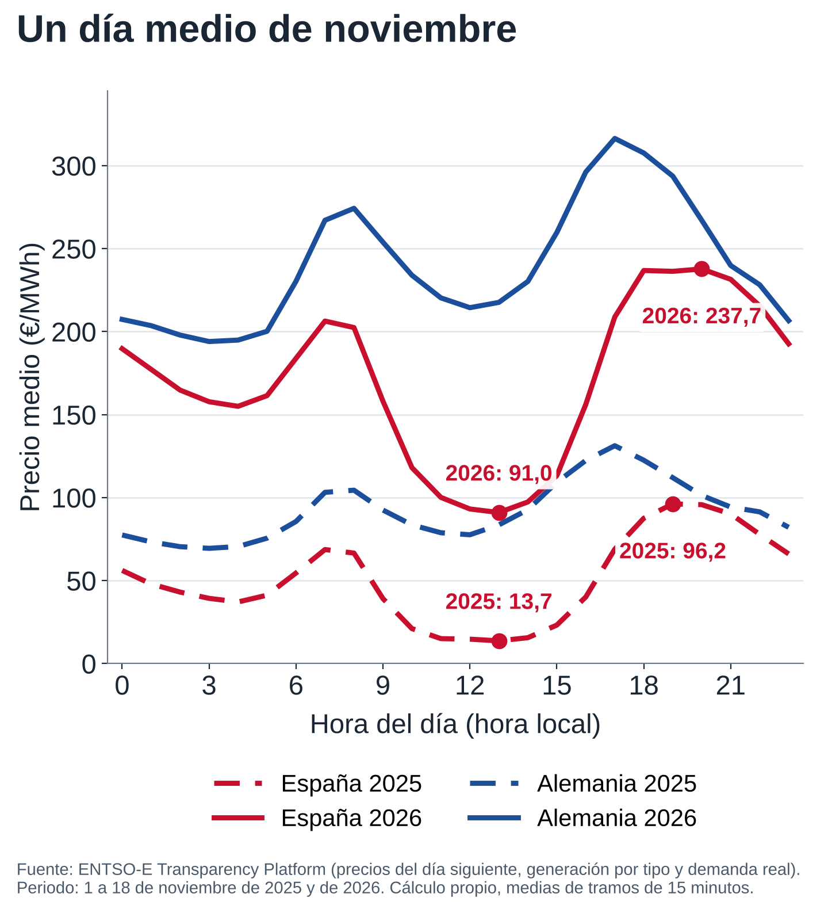
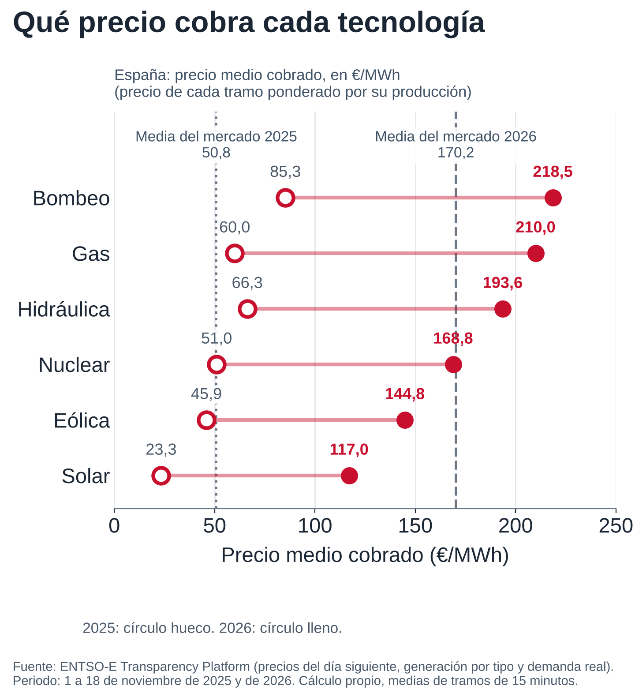

Qué hemos comparado
- Los datos: los de ENTSO-E, la plataforma pública donde los operadores de la red europea publican datos del mercado eléctrico. Usamos tres: el precio de la electricidad en el mercado del día siguiente, la generación de cada tipo de central y la demanda real, de España y de Alemania (con Luxemburgo, que forma con ella una sola zona de precios).
- El periodo: del 1 al 18 de noviembre de 2025 y del 1 al 18 de noviembre de 2026, en tramos de 15 minutos y en hora local. Haremos este mismo ejercicio durante el invierno y cuando termine, para sacar conclusiones.
Primero, el precio
Este es el precio al que se paga la electricidad en el mercado mayorista. Si tu contrato es indexado, el precio de tu energía sigue a este mercado, y por eso la subida llega a tu factura.
En España, el precio medio pasó de 50,8 a 170,2 euros por MWh (3,3 veces más). En Alemania, de 91,9 a 239,8 (2,6 veces). Un MWh son mil kWh, la unidad que ves en tu factura. En 2026, el 42,8 % de los tramos (periodos de 15 minutos) superó los 200 € por MWh en España, y el 74,8 % en Alemania. En 2025, ninguno en España y apenas el 0,06 % en Alemania.
España sigue siendo más barata que Alemania, pero la distancia se acorta: su precio era el 55 % del alemán el año pasado y es el 71 % este año. Entre julio y octubre de 2026 fue casi igual: entre el 93 % y el 99 % del alemán (en los mismos meses de 2025, entre el 73 % y el 90 %).
¿Seguirán acercándose hasta igualarse? Con estos datos no se puede decir: noviembre vuelve a separarlos, y la tendencia de un solo año no basta para proyectarlo.
La generación solar y eólica no explica la subida
La parte de la demanda cubierta por generación solar y eólica apenas cambió. En España fue del 52,9 % el año pasado y del 51,5 % este año; en Alemania, del 36,9 % los dos años. La demanda total subió un 2,9 % en España y un 4,3 % en Alemania.
Para comprobarlo, separamos los tramos según esa parte, en cinco bandas de menos del 20 % a más del 80 %. El primer gráfico las agrupa en tres: poca (menos del 40 %), media (del 40 al 60 %) y mucha (el 60 % o más). Si la subida se debiera a que hay menos generación solar y eólica, con la misma parte de demanda cubierta el precio sería parecido al del año pasado.

Qué nos dice este gráfico. Dos cosas. Primera: los precios bajan de izquierda a derecha, es decir, cuanto mayor es la generación solar y eólica, más barata es la luz. Segunda: con la misma generación, el precio de 2026 es mucho más alto, en los tres grupos y en los dos países. En España, con una generación media (del 40 al 60 % de la demanda), pasó de 50,8 a 186,8 € por MWh.
Sí cambió algo el reparto de las horas: hay más horas en la banda más baja, con menos del 20 % de la demanda cubierta por generación solar y eólica (en España, de 31 a 55 horas; en Alemania, de 88 a 139). Pero eso cambia muy poco el precio medio. Hicimos una prueba: tomamos las horas de 2026, con su reparto de más y menos generación solar y eólica, pero con los precios de 2025. El precio medio de España habría sido 53,7 € por MWh en lugar de los 170,2 € reales, solo 2,9 € más que en 2025 (50,8 €). El de Alemania, 89,2 €, menos que en 2025 (91,9 €). Es decir, casi toda la subida (98 % en España) viene de que cada hora cuesta más, no de que haya más horas con poca generación solar y eólica.
Dentro de cada año, la correlación entre generación solar y eólica y precio es de -0,89 y -0,87 en España, y de -0,71 y -0,74 en Alemania (cuanto más cerca de -1, más claro es que cuando una sube la otra baja). Es decir, la generación solar y eólica abarata la luz hora a hora, pero no explica por qué todo el nivel de precios se ha desplazado hacia arriba.
Lo que sí ha cambiado: más gas
La generación con gas pasó de 2.543 a 2.900 GWh en España (+14 %) y de 3.996 a 5.136 GWh en Alemania (+29 %). Cuanto más gas entra en un tramo, más alto es el precio, y esa relación es más fuerte este año en España: la correlación pasó de 0,74 a 0,91.
El gas es el principal sospechoso: cuando hace falta para cubrir la demanda, el precio sube, y este año hace falta más. Aun así, un 14 % más de gas en España no explica por sí solo que el precio se triplique, y con estos datos no podemos decir qué más interviene.
Un día medio: por qué importa a qué hora
El segundo gráfico muestra cómo cambia el precio a lo largo de un día medio de noviembre.

En España, la hora más barata es a las 13 h: 13,7 € por MWh el año pasado y 91,0 € este año (6,6 veces más). La más cara es por la tarde y noche: 96,2 € y 237,7 €. La diferencia entre la hora más cara y la más barata pasó de 82 a 147 € por MWh. En Alemania pasó de 62 a 122 €. En España el valle está a mediodía; en Alemania, de madrugada.
Mover consumo de las horas caras a las baratas vale ahora bastante más que hace un año. Es lo que hace una batería: guarda energía cuando es barata y la usa cuando es cara.
¿Quién sale ganando más con la subida?
Se oye a menudo que la gran beneficiada de una subida así es la fotovoltaica, porque sus costes no cambian y cobra lo mismo que las centrales más caras.
Así funciona el mercado: en cada tramo, todas las centrales cobran el mismo precio, el de la última oferta necesaria para cubrir la demanda. Pero no todas producen en las mismas horas. Por eso calculamos el precio cobrado de cada tecnología: el precio de cada tramo, ponderado por lo que produjo en él. Los ingresos de mercado son su producción multiplicada por ese precio.

La solar es la tecnología a la que menos le sube el precio cobrado: de 23,3 a 117,0 € por MWh (+94 €, frente a +150 € del gas). El 77 % de su producción cae entre las 10 y las 16 h, cuando el precio es más bajo.
En euros totales, los ingresos de mercado suben más en la eólica (+399 millones de €) y en la nuclear (+332 millones de €) que en la solar (+177 millones de €). En proporción, la solar es la que más crece (×5,2), porque partía de precios muy bajos. El bombeo y la hidráulica cobran por encima de la media, es decir, producen sobre todo en horas caras.
En Alemania, la solar cobra el 90 % de la media (216,9 € frente a 239,8 €); en España, el 69 %.
La energía solar gana mucho más que antes, pero es la que menos cobra y la que menos sube por cada MWh. Lo que más vale en estas semanas no es el tipo de central, sino producir cuando la luz es cara. Es la misma lógica que mueve a una batería.
Lo que estos datos no dicen: son ingresos al precio del mercado, no beneficios, porque no tenemos los costes de cada central. El gas ingresa mucho, pero su combustible también cuesta más y no sabemos su margen. Y no sabemos cuánta energía se vende con contratos a precio fijo, que no cobran el precio del mercado.
Qué significa para tu empresa
Si tu contrato es indexado (el precio de tu energía sigue al mercado), lo que pagas depende de cuándo consumes. Con una diferencia de 147 € por MWh entre la hora más barata y la más cara, importa saber cuánto de tu consumo cae en las caras. Si es fijo, noviembre no te cambia la factura, pero el contrato que firmes después se cotizará con este mercado. Lo explicamos en el artículo sobre el contrato indexado y el fijo.
Si lo que te encaja es una batería, el modelo Energy as a Service (EaaS) evita que pongas el capital: el activo lo financia un fondo y el pago se integra en tu operación. BioEsol, fabricante y socio tecnológico de Vesta, se encarga del diseño, la instalación, la operación y el mantenimiento. Es un contrato a largo plazo.
Límites del análisis
- Periodo corto. Son 18 días de noviembre, no un invierno. Repetiremos el análisis con diciembre, enero y febrero.
- Correlación no es causa. Que el precio suba con el gas no demuestra que el gas lo cause.
- Faltan datos. No tenemos los precios de los combustibles ni los intercambios entre países, ni sabemos qué central marcó el precio en cada hora.
- Medias simples. Son medias de tramos de 15 minutos, no ponderadas por consumo, y las bandas de generación solar y eólica son una simplificación: no distinguen entre solar y eólica ni entre horas del día.
- Datos que pueden cambiar. ENTSO-E puede corregir los datos, y en noviembre avisó de incidencias de publicación de datos de Red Eléctrica, resueltas el 16. En nuestra ventana falta un solo tramo de generación de España.
- Alemania. Usamos su subasta acoplada con el resto de Europa, que es la que coincide con la de España.
Conclusión
Con la misma generación solar y eólica y casi la misma demanda, la luz cuesta entre 2,6 y 3,3 veces más que hace un año, hay más gas en la generación y la diferencia entre las horas baratas y las caras casi se ha duplicado.
La generación solar y eólica no parece la causa: el reparto de horas con más o menos generación explica solo una parte mínima de la subida. El gas es el sospechoso principal, aunque con estos datos no podemos demostrarlo. La solar gana mucho más que antes, pero no es la que más sube por cada MWh: lo que más vale es producir cuando la luz es cara. Para una empresa, la lección práctica es que el precio de cada hora importa más que antes, y que saber cuándo consumes es el primer paso.
De dónde salen estos datos
- Precios del mercado del día siguiente (12.1.D), generación real por tipo de central (16.1.B&C) y demanda real (6.1.A) de España (zona BZN|ES) y de Alemania y Luxemburgo (BZN|DE-LU): ENTSO-E Transparency Platform, descargados el 23 de noviembre de 2026.
- Periodo: del 1 al 18 de noviembre de 2025 y de 2026, en tramos de 15 minutos y en hora local. Todos los números del artículo son un cálculo propio con esos datos.
- Lo que decimos sobre cómo funciona el mercado (todas las centrales cobran el mismo precio en cada tramo) y sobre los contratos indexado y fijo no sale de estos datos.